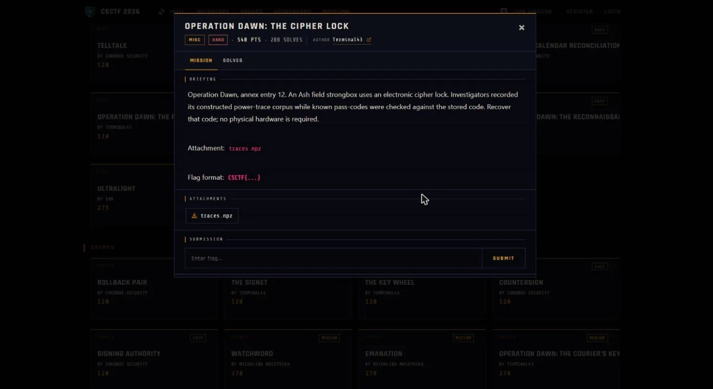

01Start point: what is in the archive
- What I found: I loaded traces.npz with allow_pickle=False, because a numpy archive can carry pickled objects that run code on load. It holds three arrays: traces (1500 x 87 floats, one power trace per guess attempt with 87 time samples each), plaintexts (1500 x 47 bytes, the known pass-code entered on each attempt) and sbox (256 bytes, where sbox[0] is 0x63, so it is the standard AES S-box).
- Thinking: 47 entered bytes per attempt means 47 bytes of stored code to find. This is a per-byte secret, so the attack is 47 independent single-byte CPAs, not a 128-bit key schedule.
- Result: the problem is 47 small searches of 256 candidates each.

02Pivot: the leakage model
- What I did: assumed the lock validates each position by computing sbox[entered_byte XOR stored_byte], the classic AES first-round target.
- Thinking: a CMOS circuit's power draw tracks the Hamming weight of the byte it handles, so one sample in each trace should correlate with HW(sbox[pt ^ stored]). Only the stored byte is unknown, which is 256 options per position.
- Result: a usable model for every position.
03Exploit: correlation power analysis, one byte at a time
- What I did: for position p and each candidate stored value g in 0..255, I built the model column HW(sbox[plaintexts[i,p] ^ g]) over all 1500 traces and computed the Pearson correlation against each of the 87 time samples. The guess with the highest absolute correlation is the real stored byte.
- Thinking: a wrong guess has no relation to the real leakage, so only the true byte should stand out from the noise.
- Result: the correct guess peaks at r of about 0.29 to 0.38 at the leaking sample, while every wrong guess stays near the noise floor (absolute r below about 0.1). The separation is clean on all 47 positions.
04Result: read the code
- What I found: the 47 recovered bytes are all printable ASCII and spell CSCTF{12_the_depot_is_unguarded_at_noon_7d3e90}.
- Thinking: printable bytes forming a valid CSCTF{...} string is the pass/fail check, since one wrong byte would show up as garbage at its position. The 12 also matches annex entry 12 in the briefing.
- Result: flag recovered.